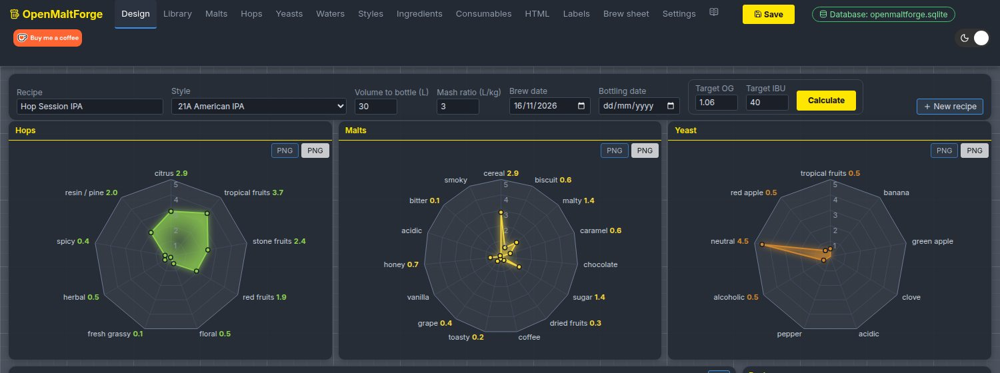
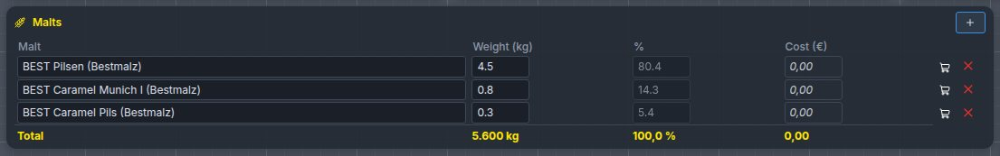
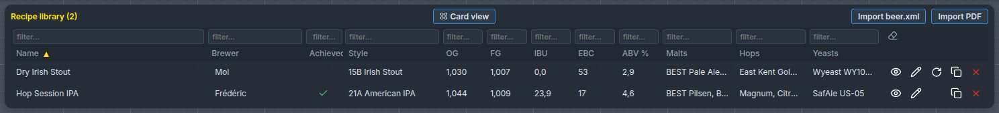
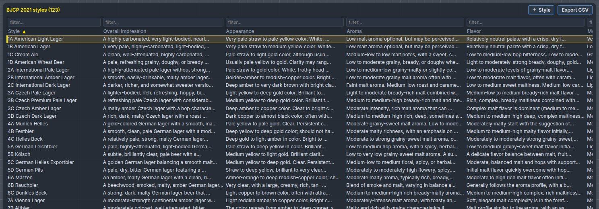
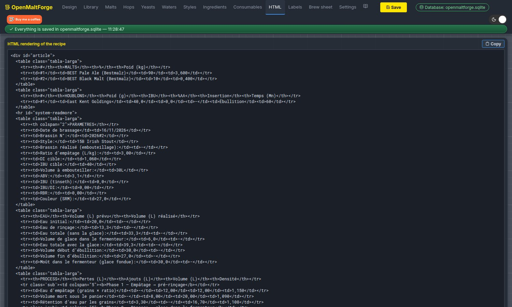

Documentazione di OpenMaltForge
OpenMaltForge (in precedenza OpenBrew, e BrewCraft prima della versione 5.0.0) è un’applicazione desktop per progettare ricette di birra: calcolo della densità, dell’amaro e del colore, acqua e minerali, processo di cotta, costi, scorte e lista della spesa, libreria di ricette, etichette e scheda di cotta stampabili.
Per iniziare
- Linux: installa il pacchetto
openmaltforge_<versione>_amd64.deb(menu «OpenMaltForge») oppure avvia direttamente il programmaopenmaltforge_<versione>_linux_amd64. - Windows: avvia
OpenMaltForge_<versione>.exe. - macOS: decomprimi
OpenMaltForge_<versione>_macos_apple_silicon.zip(Mac M1, M2…) o…_macos_intel.zip, trascinaOpenMaltForge.appin Applicazioni; al primo avvio, clic destro sull’applicazione poi «Apri» (applicazione non firmata da Apple).
OpenMaltForge si apre in una finestra propria (motore del browser Chrome, Chromium, Edge o Brave installato sul computer).
Tutti i dati sono salvati in un unico file: ~/OpenMaltForge/openmaltforge.sqlite (cartella personale, sottocartella
OpenMaltForge). Al primo avvio viene ripreso automaticamente il database di OpenBrew
(~/OpenBrew/openbrew.sqlite), altrimenti quello di BrewCraft (~/BrewCraft/brewcraft.sqlite), o, in mancanza, un database di una versione 3.x
(brewcraft_3.x.sqlite); il vecchio file non viene modificato.
OpenMaltForge si apre sempre sulla schermata Progettazione.
Un database nuovo viene riempito con i dati iniziali: malti, luppoli, lieviti, stili BJCP 2021, acque, ingredienti, caratteri.
L’interfaccia

- Menu: Progettazione, Libreria, i database (Malti, Luppoli, Lieviti, Acque, Stili, Ingredienti, Consumabili), HTML, Etichette, Scheda di cotta, Impostazioni, poi l’icona Documentazione (libro aperto) che mostra questa pagina).
- Salva: scrive subito tutti i dati nel database. Avviene anche un salvataggio automatico (ogni 5 minuti per impostazione predefinita, regolabile in Impostazioni › Preferenze).
- Spia «Database: openmaltforge.sqlite»: verde quando tutto è salvato. In caso di problema (programma chiuso, scrittura rifiutata) compare un avviso arancione; un clic ritenta il salvataggio.
- Area delle notifiche (sotto il menu): messaggi temporanei in verde (salvataggio, calcolo), errori in rosso, avvisi persistenti in arancione (per esempio un rapporto d’ammostamento troppo alto per il tino). Più messaggi vengono mostrati uno accanto all’altro.
- Tema: l’interruttore sole / luna, in alto a destra, passa dal tema scuro a quello chiaro; la scelta viene ricordata.
- Piè di pagina: licenza (GNU GPL v3, clic per leggere il testo) e numero di versione.
Progettare una ricetta
La schermata Progettazione raccoglie la ricetta in corso. Tutto viene ricalcolato a ogni inserimento.
Ricetta e obiettivi
- Ricetta, Stile (stili BJCP 2021), Volume da imbottigliare, Rapporto d’ammostamento (L/kg), date di cotta e di imbottigliamento.
- Date:
- Data di cotta: serve per il numero di cotta (
anno#rango) delle etichette e dell’HTML. - Data di imbottigliamento: inserirla segna la cotta come realizzata. I suoi componenti (malti, luppoli, lieviti, ingredienti, consumabili, acque minerali) vengono scalati dalle scorte, una sola volta, e un messaggio indica quanti; compare la sezione Analisi organolettica della cotta; la ricetta riceve la spunta verde «Realizzata» nella Libreria e l’HTML mostra la data di imbottigliamento e l’analisi. Cancellare la data rimette i componenti nelle scorte e nasconde l’analisi. La data di imbottigliamento non può essere anteriore alla data di cotta: un tale inserimento viene rifiutato (messaggio in rosso) e il valore precedente viene ripristinato; allo stesso modo, la data di cotta non può essere successiva a quella di imbottigliamento.
- Data di cotta: serve per il numero di cotta (
- DI target, IBU target e pulsante Calcola:
- se le percentuali dei malti o dei luppoli non fanno 100 %, una finestra propone di riportarle a 100 % (regola del tre); altrimenti il calcolo non viene fatto;
- i malti vengono moltiplicati per uno stesso fattore perché la densità iniziale raggiunga la DI target (le proporzioni tra i malti non cambiano);
- poi i luppoli da amaro vengono moltiplicati per uno stesso fattore per raggiungere gli IBU target (formula di Tinseth); i luppoli senza amaro (dry hop) restano invariati;
- i pesi vengono arrotondati (al grammo per i malti, al decimo di grammo per i luppoli), la ricetta viene ricalcolata e salvata, e un messaggio ricorda la DI e gli IBU ottenuti;
- messaggi di errore: target vuoti o fuori limite (DI tra 1,010 e 1,200, IBU maggiori di 0), nessun malto riconosciuto, nessun luppolo da amaro.
- ＋ Nuova ricetta: riparte da una ricetta vuota (obiettivi e rapporto riprendono i valori predefiniti delle Impostazioni); la lista della spesa viene svuotata.
- Radar aromatici di malti, luppoli e lieviti: profilo della ricetta, valore mostrato al passaggio su un punto, ingrandimento al clic (Esc per chiudere), esportazione come immagine con i pulsanti PNG (sfondo scuro o chiaro).
Malti, luppoli, lieviti

- Il pulsante ＋ del titolo aggiunge una riga; la croce rossa la elimina.
- Nome: digita almeno 3 lettere per scegliere nel database (la malteria è indicata dopo il nome dei malti).
- Peso o percentuale: inserisci i pesi, oppure le percentuali (il peso viene allora calcolato; reinserire un peso torna alla modalità peso).
- Luppoli: peso, uso (First Wort, Bollitura, Whirlpool, Hopstand, Dry hop) e tempo; gli IBU sono calcolati con la formula di Tinseth, ponderata dai coefficienti di utilizzo delle Impostazioni.
- Lieviti: numero di bustine, attenuazione e flocculazione del ceppo.
- Carrello a fine riga: aggiunge il componente alla lista della spesa (vedi Lista della spesa). È arancione quando le scorte non bastano, verde quando il componente è già nella lista.

Acqua e minerali

- Scegli una o più acque (database «Acque») e la loro quota, in litri o in percentuale.
- Gli ioni (Cl, SO4, Ca, Mg, Na, HCO3) della miscela sono confrontati con gli intervalli dello stile; la riga delle aggiunte (mg/L) calcola le quantità di minerali, aggiunte automaticamente agli ingredienti della ricetta (righe «— auto»).
Ingredienti e materiali di consumo

Soste, quantità d’acqua, priming


Riepilogo della ricetta e costi

Densità iniziale e finale, attenuazione, flocculazione, IBU, colore (EBC / SRM), alcol, rapporti IBU / DI e RBR, con l’intervallo atteso per lo stile scelto, poi il colore stimato della birra.

Analisi sensoriale

Data di degustazione, densità misurate, ABV reale, colore, limpidezza, schiuma, carbonazione, poi note e commenti per criterio (aroma, aspetto, sapore, sensazione in bocca, impressione generale).
Inserimento di espressioni matematiche
In qualsiasi campo di inserimento, un testo che inizia con = viene calcolato. Il risultato sostituisce la formula quando confermi con Invio o lasci il campo, e viene considerato come un normale inserimento.

=4,5+0,25 nel peso (kg) del primo malto…
| Elemento | Scrittura | Esempio | Risultato |
|---|---|---|---|
| Addizione, sottrazione | + - | =4,5+0,25 | 4,75 |
| Moltiplicazione, divisione | * o ×, / o ÷ | =3*(2+1,5)/4 | 2,625 |
| Potenza | ^ | =2^10 | 1024 |
| Parentesi | ( ) | =(20-12)*1,5 | 12 |
| Percentuale | % dopo un numero (÷ 100) | =30*85% | 25,5 |
| Radice quadrata | sqrt( ) | =sqrt(16) | 4 |
| Valore assoluto | abs( ) | =abs(12-20) | 8 |
| Arrotondamento | round( ) | =round(40/3) | 13 |
| Numero negativo | - davanti | =-2+5 | 3 |
- La virgola o il punto fungono da separatore decimale (
4,5=4.5); gli spazi vengono ignorati. - Priorità abituali: parentesi, poi potenza, poi moltiplicazione e divisione, poi addizione e sottrazione.
- In un campo numerico, il tasto = (o incollare un testo che inizia con
=) passa il campo all’inserimento di testo per il tempo della formula. - Una formula non valida (parentesi mancante, divisione per zero…) non viene applicata: il campo lampeggia in rosso e il suo suggerimento indica «Formula non valida».
- Il risultato è arrotondato a 12 cifre significative.
=5,6*80%), convertire 12 oz in grammi (=12*28,35), completare un volume (=30-4,2-1,5).Lista della spesa e scorte

Aggiunta automatica
- Un malto, luppolo, lievito, ingrediente, materiale di consumo o un’acqua minerale usato nella ricetta in corso entra nella lista non appena la ricetta esaurisce le sue scorte (quantità richiesta ≥ scorte); la quantità proposta è ciò che manca (o la quantità usata quando le scorte arrivano esattamente a zero). Per le acque, sono i litri di ogni acqua minerale della miscela; le acque di rete non vengono mai aggiunte.
- Esce automaticamente non appena le scorte tornano a bastare (per esempio diminuendo la quantità nella ricetta).
- Quantità fisse: una volta che un articolo è nella lista, la sua quantità non cambia più da sola (pulsante «Calcola», modifica di una riga…). Se diventa inferiore a ciò che manca, compare un triangolo arancione accanto alla quantità (il suo suggerimento indica ciò che manca) e una notifica arancione segnala gli articoli interessati; correggi la quantità per farli sparire.
- I componenti non usati dalla ricetta non vengono mai aggiunti, nemmeno con scorte a zero.
- ＋ Nuova ricetta svuota la lista della spesa (aggiunte manuali comprese); poi si riempie in base alla nuova ricetta.
- Componente tolto dalla ricetta: quando elimini un componente dalla ricetta (o lo sostituisci con un altro), esce anche dalla lista della spesa — compresi il malto, il luppolo e il lievito proposti per impostazione predefinita in una nuova ricetta, e un articolo aggiunto con il carrello della ricetta. Restano solo gli articoli aggiunti dalle schermate dei database (Malti, Luppoli…).
Aggiunta manuale
- Carrello a fine riga della ricetta: aggiunge il componente se non è già nella lista (quantità mancante, altrimenti la quantità usata dalla ricetta).
- Carrello delle schermate dei database (Malti, Luppoli…, acque minerali): aggiunge l’articolo con la quantità che manca per la ricetta, o una quantità predefinita.
- Un articolo aggiunto a mano, o di cui modifichi la quantità, non viene mai rimosso automaticamente.
- La croce rimuove un articolo; se manca ancora per la ricetta, non viene rimesso finché le scorte restano esaurite.
- L’icona della stampante nel titolo stampa la lista della spesa (o la salva in PDF).
Pulsante info
- Il pulsante ⓘ a fine riga di un articolo dà lo stato delle scorte del componente: lascia il mouse sopra per un secondo (o fai clic) per vedere le scorte attuali, il fabbisogno della ricetta attuale, le scorte dopo l’acquisto (scorte attuali + quantità da acquistare) e ciò che resterà dopo la cotta (in rosso se manca ancora qualcosa). Se la ricetta è già realizzata, il fumetto ricorda che il suo consumo è già scalato; un articolo assente dal database non ha scorte note.
Scorte
- Ogni database ha una colonna scorte (stock: kg per i malti, g per luppoli e ingredienti, bustine per i lieviti, unità per i materiali di consumo, litri per le acque).
- Database Acque: prezzo/L e scorte (L) per le acque minerali; il loro costo entra nel costo dell’acqua della ricetta.
- Quando la data di imbottigliamento della ricetta è inserita, la cotta è «realizzata»: i suoi componenti vengono detratti dalle scorte, una sola volta. Cancellare la data li rimette in scorta.
Libreria e importazioni

- «Salva» nella Progettazione registra la ricetta in corso nella libreria (aggiornata se c’è già).
- Matita: apre la ricetta nella Progettazione. Croce: la elimina (dopo conferma).
- Colonne: nome, birraio, realizzato, stile, DI, DF, IBU, EBC, ABV, malti, luppoli, lieviti; una riga di filtri e l’ordinamento con un clic sull’intestazione. Il pulsante gomma cancella tutti i filtri.
- Vista schede: visualizzazione a schede con il colore della birra.
- Numero di cotta:
anno#posizione(es.2026#12), posizione per data di cotta tra le ricette dell’anno, escluse le ricette importate. Compare sulle etichette e nell’HTML. - Importa beer.xml (BeerXML 1.0) e Importa PDF (stampa di una ricetta Brewfather, esportazione PDF di BeerSmith): le ricette importate sono in sola lettura (da copiare per modificarle). Importa beer.xml: un ingrediente assente dal database vi viene aggiunto con i dati del file. Importa PDF: una finestra «Corrispondenza degli ingredienti» propone di collegare ogni ingrediente sconosciuto a un ingrediente del database; altrimenti resta come semplice testo nella ricetta.

Database degli ingredienti
Schermate Malti, Luppoli, Lieviti, Acque, Stili, Ingredienti, Consumabili: il database di riferimento usato dalle ricette.

- Una riga di filtri sotto le intestazioni (testo o numero); ordinamento con un clic sull’intestazione; paginazione di 15 righe.
- A fine riga: matita (modificare la riga, altrimenti in sola lettura), duplicare, carrello (lista della spesa), croce (eliminare). Il ＋ dell’intestazione aggiunge una riga.
- Esporta CSV, Incolla CSV (importare righe da un foglio di calcolo) e Cancella tutto.
- Note aromatiche su una scala da 0 a 5; malti, luppoli e lieviti si confrontano su un radar (fino a 5 nomi).
- Stili: i 123 stili BJCP 2021 con descrizione, intervalli (IBU, SRM, OG, FG, ABV) e profili dell’acqua; ＋ Stile per aggiungerne uno.


Resa HTML

Etichette

- Formati (colonna di destra): fasce, etichette rettangolari, rotonde, tappi, collarini, modelli illustrati (locandina di concerto, saloon, vinile, reggae, romantico, soul, punk…), con le loro dimensioni e il numero per foglio A4.
- Testo del codice QR (un indirizzo o un testo libero), Volume (cl), Numero di etichette, colori della cornice, del carattere e dello sfondo.
- Carattere: elenco a discesa in cui ogni carattere è mostrato nel proprio stile; digita qualche lettera per filtrare, frecce e Invio per scegliere. I pulsanti A↑ / A↓ ingrandiscono o riducono il testo.
- Il logo delle etichette si sceglie in Impostazioni › Logo delle etichette. Il numero di cotta è calcolato automaticamente.
- Stampa / PDF: stampa del foglio (o salvataggio in PDF).

Scheda di cotta

- Cinque presentazioni: Classico, Scheda da compilare, Locandina rock, Passo dopo passo, Diario di cotta.
- Colori della cornice / accento, dello sfondo e del carattere; scelta del carattere (ogni nome mostrato nel proprio carattere).
- Si può scrivere direttamente nella scheda: volumi, densità e soste realmente ottenuti, e note di cotta; tutto viene salvato con la ricetta.
- Stampa / PDF.
Impostazioni


- Attrezzatura e processo: nome dell’attrezzatura, volume da imbottigliare, resa d’ammostamento; Valori predefiniti: durata della bollitura, evaporazione, temperatura iniziale dell’acqua, riscaldamento, raffreddamento, assorbimento delle trebbie, DI e IBU target, rapporto d’ammostamento (applicati a ogni nuova ricetta). Il rapporto d’ammostamento della ricetta si inserisce nella Progettazione.
- Processo — perdite e aggiunte d’acqua: il processo in fasi (per impostazione predefinita: ammostamento → pre-risciacquo, risciacquo → ghiaccio, imbottigliamento), passo dopo passo, con il volume e la densità calcolati a ogni riga. ＋ Fase aggiunge una fase, ＋ (in testa alle colonne) aggiunge un passaggio alla fase; la matita a fine riga rende modificabili il nome della fase oppure il nome, le perdite e le aggiunte del passaggio (OK o Invio per confermare); ▲ ▼ spostano un passaggio (al bordo di una fase passa nella fase vicina) o una fase; ✕ elimina (una fase che contiene passaggi chiede conferma). Una casella vuota riprende il valore automatico delle Impostazioni. La riga OG segue la fase del ghiaccio, la riga FG chiude l’ultima fase. ↺ predefinito torna al processo originale.
- Impostazioni di cotta: dati di base, perdite e aggiunte, vincoli e temperature; una casella vuota prende il valore automatico (ricetta o attrezzatura). Un campo rosso segnala un superamento (per esempio il volume massimo del tino).
- Fabbisogno di elettricità: potenza e durata di ogni voce, kWh e costo.
- Coefficienti di utilizzo del luppolo per uso, applicati agli IBU di Tinseth.
- Logo delle etichette: scegliere un’immagine.
- Caratteri: caratteri Google Fonts salvati nel database; Importa (più file alla volta), filtro, anteprima al passaggio del mouse. I caratteri dell’interfaccia, segnati da un lucchetto, non possono essere eliminati; quando si elimina un altro carattere, una finestra propone un carattere sostitutivo.
- Contattami: l’indirizzo dello sviluppatore,
openmaltforge@pm.me(clic = nuovo messaggio nella tua posta, Copia = indirizzo negli appunti), per una domanda, un’idea o un problema. - Unità: sezione in preparazione (disattivata).
- Da cercare (visibile solo se necessario): ingredienti trovati durante un’importazione (PDF Brewfather / BeerSmith) e assenti dal database. Ogni ingrediente è un’etichetta (la sua croce lo toglie; Cancella tutto svuota l’elenco); un ingrediente scompare da solo appena esiste nel database. Generazione del prompt: il testo mostrato è costruito automaticamente, nella lingua dell’interfaccia (viene rigenerato quando cambi lingua):
- un’introduzione che presenta il compito (cercare su Internet i dati di ogni ingrediente e produrre file CSV);
- una sezione per categoria interessata (malti, luppoli, lieviti, ingredienti vari), con il nome del file CSV atteso (
malts_nouveaux.csv,houblons_nouveaux.csv,levures_nouvelles.csv,ingredients_nouveaux.csv) e l’elenco degli ingredienti, ciascuno con i dati trovati nella ricetta importata e le ricette in cui compare; - le regole comuni dei CSV (codifica UTF-8, separatore punto e virgola, virgola decimale…);
- per ogni file: le intestazioni esatte delle colonne del tuo database, il significato di ogni colonna (unità, scale degli aromi da 0 a 5…) e una riga di esempio presa dal tuo database per mostrare il formato.

- Salvataggio automatico: attivo o no, e intervallo in minuti (0 = dopo ogni modifica). Se disattivato, solo il pulsante «Salva» scrive nel database.
- Lingua dell’interfaccia: francese, inglese, spagnolo, italiano, portoghese. Tutta l’interfaccia è tradotta, compreso il prompt della sezione «Da cercare» e questa documentazione (nelle lingue diverse dal francese, le schermate mostrano l’interfaccia in inglese).
- Esporta il database…: scarica una copia
AAAAMMGG_openmaltforge.sqlitedello stato visualizzato. - Cambia database…: sostituisce il database con il contenuto di un altro file
.sqlite; il file viene verificato e aggiornato, e una copia del database attuale viene conservata insauvegardes/.

Dati e copie di sicurezza
- Database unico:
~/OpenMaltForge/openmaltforge.sqlite(un solo file, copiabile in qualsiasi momento). - Prima di ogni aggiornamento della struttura del database, e prima di un cambio di database, viene fatta una copia in
~/OpenMaltForge/sauvegardes/. - Un database creato da una versione più recente di OpenMaltForge viene rifiutato (installa l’ultima versione).
- I vecchi database (BrewCraft da 1.x a 4.x) vengono riconosciuti e convertiti; il database di OpenBrew 5.x (
~/OpenBrew/openbrew.sqlite), altrimenti quello di BrewCraft 4.x (~/BrewCraft/brewcraft.sqlite), viene ripreso al primo avvio di OpenMaltForge.
Suggerimenti
- Campi calcolati (sfondo più scuro, in sola lettura): passaci sopra con il mouse per mezzo secondo per vedere come viene calcolato il valore.
- Esc chiude le finestre di dialogo e gli ingrandimenti; Invio conferma.
- Un clic in un campo ne seleziona il contenuto: ciò che digiti lo sostituisce direttamente.
- Le formule (=) funzionano ovunque, anche nei database e nelle impostazioni.
OpenMaltForge — applicazione con licenza GNU GPL v3. Icone Lucide (licenza ISC).